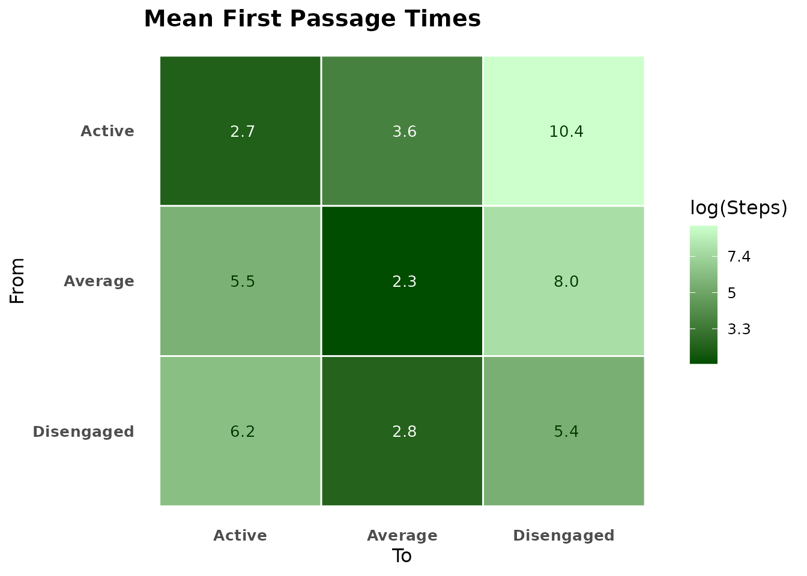
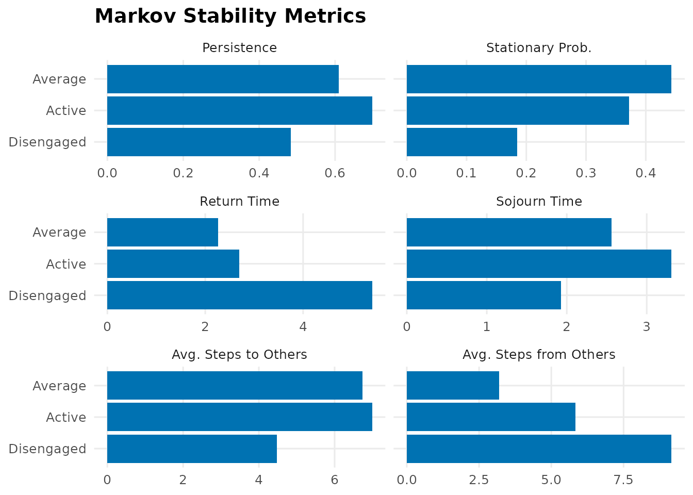
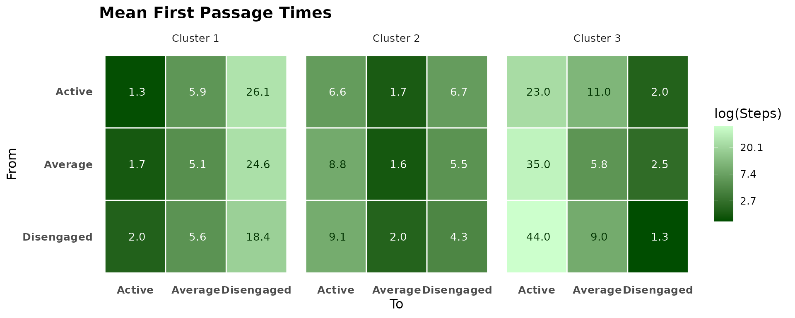
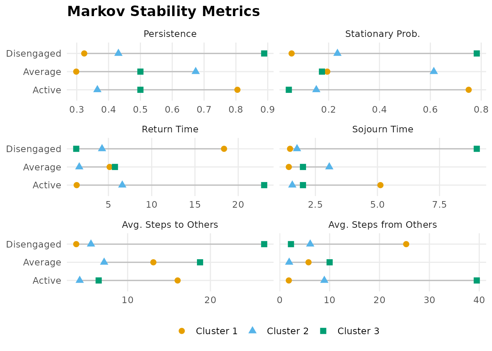

Markov Stability Analysis
Mohammed Saqr
University of Eastern FinlandSonsoles López-Pernas
University of Eastern FinlandKamila Misiejuk
FernUniversität in Hagen, GermanySource:
vignettes/markov-stability.Rmd
markov-stability.RmdIn a complex-systems view of learning, a state is stable when students who reach it tend to remain in it and students who leave it tend to return (Saqr, Dever, et al. 2025; Saqr, López-Pernas & Tikka 2026). López-Pernas and Saqr (2024) described student engagement in these terms, as the momentum of achievement and the inertia of disengagement. Markov chain theory measures stability from a transition network (Kemeny & Snell 1976). For a first-order chain with transition matrix and stationary distribution :
- the persistence of state is , the probability of remaining in it at the next step;
- the sojourn time is , the expected number of consecutive steps spent in it once entered;
- the stationary probability is the long-run share of steps spent in it, and the return time is the expected number of steps between two visits;
- the mean first passage time is the expected number of steps to reach state for the first time from state .
In Nestimate (Saqr, López-Pernas & Misiejuk 2026),
passage_time() returns the matrix of mean first passage
times and markov_stability() the per-state measures. Both
accept a network, a transition matrix, or a group of networks.
Data
trajectories records the engagement state of 138
students in each of the 15 successive courses of a program. The states
are the three engagement states of Saqr and López-Pernas (2021):
Active, Average and Disengaged.
Saqr and López-Pernas (2021) and Saqr, López-Pernas, Jovanović and
Gašević (2023) followed such engagement trajectories across the courses
of a full program. The data have one row per student and one column per
course; a missing value occurs only as a run at the end of a row and
marks the point at which a student left the program.
The transition network
build_network() estimates the probability of moving from
each state to each state between consecutive courses.
library(Nestimate)
net <- build_network(trajectories, method = "relative")
net
#> Transition Network (relative probabilities) [directed]
#> Weights: [0.035, 0.698] | mean: 0.333
#>
#> Strongest edges (9 of 9):
#> from to weight
#> Active Active 0.698
#> Average Average 0.610
#> Disengaged Disengaged 0.483
#> Disengaged Average 0.397
#> Active Average 0.267
#> Average Active 0.204
#> Average Disengaged 0.186
#> Disengaged Active 0.120
#> Active Disengaged 0.035
#>
#> extract_edges(include_self = TRUE) lists every edge; extract_transition_matrix() gives the weight matrix;
#> extract_initial_probs() the initial probabilities.The probabilities leaving each state sum to 1. A student who is
Active in one course is Active in the next
with probability 0.698, Average with probability 0.267 and
Disengaged with probability 0.035. The measures below are
computed from this matrix, so they assume that the transition
probabilities are the same in every course and that the next state
depends only on the current one.
Mean first passage times
pt <- passage_time(net)
print(pt, digits = 2)
#> Mean First Passage Times (3 states)
#>
#> Active Average Disengaged
#> Active 2.69 3.63 10.36
#> Average 5.51 2.26 7.97
#> Disengaged 6.16 2.78 5.41
#>
#> Stationary distribution:
#> Active Average Disengaged
#> 0.3719 0.4431 0.1850
plot(pt)
Row
,
column
of the matrix is the expected number of courses for a student in state
to reach state
for the first time; the diagonal is the return time. A student in
Active takes 3.6 courses on average to reach
Average and 10.4 courses to reach Disengaged.
In the reverse direction, a student in Disengaged takes 6.2
courses to reach Active and 2.8 courses to reach
Average. Decline from Active to
Disengaged is therefore slower than recovery in the
opposite direction, and both pass mostly through Average.
The values are expectations under the fitted chain; a value longer than
the 15 courses of the program describes the chain, not a time that was
observed.
Stability of the states
ms <- markov_stability(net)
summary(ms)
#> state persistence stationary_prob return_time sojourn_time
#> 1 Active 0.6976 0.3719 2.69 3.31
#> 2 Average 0.6099 0.4431 2.26 2.56
#> 3 Disengaged 0.4831 0.1850 5.41 1.93
#> avg_time_to_others avg_time_from_others
#> 1 6.99 5.84
#> 2 6.74 3.20
#> 3 4.47 9.16
plot(ms)
persistence, stationary_prob,
return_time and sojourn_time are the measures
defined above. avg_time_to_others is the mean passage time
from the state to the other states, and
avg_time_from_others the mean passage time from the other
states to it; a state with a short avg_time_from_others is
reached quickly from anywhere.
Active is the most persistent state: its persistence is
0.698 and its sojourn time 3.31 courses. Average is the
most accessible: it is reached from the other states in 3.20 courses on
average, and it has the largest stationary probability, 0.443.
Disengaged is the least persistent (0.483, a sojourn of
1.93 courses) and the least accessible (9.16 courses), and it is the
state students spend the least time in (0.185).
Groups of students
A single chain for all students averages over students whose
engagement develops differently. Sequence clustering groups the students
by the similarity of their sequences (Saqr, López-Pernas, Helske, et
al. 2024), and a transition network can then be estimated for each group
(López-Pernas, Tikka & Saqr 2025). build_clusters()
computes the Hamming distance between sequences, the number of courses
in which two students are in different states (Hamming 1950), and
partitions the students around medoids (Kaufman & Rousseeuw 1990).
Three clusters are used here as a working choice.
clusters <- build_clusters(trajectories, k = 3, seed = 2026)
clusters
#> Sequence Clustering [pam]
#> Sequences: 138 | Clusters: 3
#> Dissimilarity: hamming
#> Quality: silhouette = 0.360
#>
#> Cluster N Mean within-dist Medoid
#> 1 47 (34.1%) 5.898 124
#> 2 74 (53.6%) 8.389 44
#> 3 17 (12.3%) 5.412 103The three clusters have 47, 74 and 17 students. The average
silhouette is 0.36 (Rousseeuw 1987), a moderate separation.
build_network() on the clustering estimates one transition
network per cluster, and state_distribution() shows the
states that make up each cluster.
cluster_networks <- build_network(clusters)
state_distribution(cluster_networks)
#> group state count proportion
#> 1 Cluster 1 Active 528 0.75213675
#> 2 Cluster 1 Average 139 0.19800570
#> 3 Cluster 1 Disengaged 35 0.04985755
#> 4 Cluster 2 Average 663 0.60382514
#> 5 Cluster 2 Disengaged 263 0.23952641
#> 6 Cluster 2 Active 172 0.15664845
#> 7 Cluster 3 Disengaged 56 0.80000000
#> 8 Cluster 3 Average 11 0.15714286
#> 9 Cluster 3 Active 3 0.04285714Cluster 1 is mostly Active (75% of its observed
courses), cluster 2 mostly Average (60%), and cluster 3
mostly Disengaged (80%).
passage_time() and markov_stability()
accept the group of networks and compute the measures for each cluster.
summary() returns one table with a row for each cluster and
state.
cluster_pt <- passage_time(cluster_networks)
summary(cluster_pt)
#> group state return_time stationary mean_out mean_in
#> 1 Cluster 1 Active 1.33 0.7508 16.04 1.82
#> 2 Cluster 1 Average 5.14 0.1947 13.11 5.77
#> 3 Cluster 1 Disengaged 18.36 0.0545 3.79 25.35
#> 4 Cluster 2 Active 6.60 0.1516 4.21 8.94
#> 5 Cluster 2 Average 1.63 0.6137 7.16 1.89
#> 6 Cluster 2 Disengaged 4.26 0.2347 5.57 6.11
#> 7 Cluster 3 Active 23.00 0.0435 6.50 39.50
#> 8 Cluster 3 Average 5.75 0.1739 18.75 10.00
#> 9 Cluster 3 Disengaged 1.28 0.7826 26.50 2.25
plot(cluster_pt)
cluster_ms <- markov_stability(cluster_networks)
summary(cluster_ms)
#> group state persistence stationary_prob return_time sojourn_time
#> 1 Cluster 1 Active 0.8048 0.7508 1.33 5.12
#> 2 Cluster 1 Average 0.2984 0.1947 5.14 1.43
#> 3 Cluster 1 Disengaged 0.3235 0.0545 18.36 1.48
#> 4 Cluster 2 Active 0.3648 0.1516 6.60 1.57
#> 5 Cluster 2 Average 0.6737 0.6137 1.63 3.06
#> 6 Cluster 2 Disengaged 0.4309 0.2347 4.26 1.76
#> 7 Cluster 3 Active 0.5000 0.0435 23.00 2.00
#> 8 Cluster 3 Average 0.5000 0.1739 5.75 2.00
#> 9 Cluster 3 Disengaged 0.8889 0.7826 1.28 9.00
#> avg_time_to_others avg_time_from_others
#> 1 16.04 1.82
#> 2 13.11 5.77
#> 3 3.79 25.35
#> 4 4.21 8.94
#> 5 7.16 1.89
#> 6 5.57 6.11
#> 7 6.50 39.50
#> 8 18.75 10.00
#> 9 26.50 2.25
plot(cluster_ms)
In cluster 1, Active has persistence 0.805 and a sojourn
time of 5.12 courses, and it is reached from the other states in 1.82
courses on average. Disengaged is reached from the other
states in 25.35 courses on average, longer than the program: under this
cluster’s chain, students rarely reach it. In cluster 2,
Average is the most persistent state (0.674, a sojourn of
3.06 courses) and the most accessible (1.89 courses), and
Active takes 8.94 courses to reach. In cluster 3,
Disengaged has persistence 0.889 and a sojourn time of 9.00
courses.
The estimates of cluster 3 rest on few observations. Its 17 students
contribute 2 transitions out of Active and 8 out of
Average, so the persistence of those two states (0.500
each) and the long passage times to Active (39.50 courses
from the other states) are not reliable. The number of transitions out
of each state can be checked with
build_network(clusters, method = "frequency") before the
measures are interpreted.
How to cite this article
Saqr, M., López-Pernas, S., & Misiejuk, K. (2026). Markov stability analysis. Nestimate. HTML · PDF
References
Hamming, R. W. (1950). Error detecting and error correcting codes. Bell System Technical Journal, 29(2), 147–160. https://doi.org/10.1002/j.1538-7305.1950.tb00463.x
Kaufman, L., & Rousseeuw, P. J. (1990). Finding groups in data: An introduction to cluster analysis. Wiley. https://doi.org/10.1002/9780470316801
Kemeny, J. G., & Snell, J. L. (1976). Finite Markov chains. Springer.
López-Pernas, S., & Saqr, M. (2024). How the dynamics of engagement explain the momentum of achievement and the inertia of disengagement: A complex systems theory approach. Computers in Human Behavior, 153, 108126. https://doi.org/10.1016/j.chb.2023.108126
López-Pernas, S., Tikka, S., & Saqr, M. (2025). Mining patterns and clusters with transition network analysis: A heterogeneity approach. In M. Saqr & S. López-Pernas (Eds.), Advanced learning analytics methods: AI, precision and complexity (pp. 447–468). Springer. https://doi.org/10.1007/978-3-031-95365-1_17
Rousseeuw, P. J. (1987). Silhouettes: A graphical aid to the interpretation and validation of cluster analysis. Journal of Computational and Applied Mathematics, 20, 53–65. https://doi.org/10.1016/0377-0427(87)90125-7
Saqr, M., & López-Pernas, S. (2021). The longitudinal trajectories of online engagement over a full program. Computers & Education, 175, 104325. https://doi.org/10.1016/j.compedu.2021.104325
Saqr, M., Dever, D., López-Pernas, S., Gernigon, C., Marchand, G., & Kaplan, A. (2025). Complex dynamic systems in education: Beyond the static, the linear and the causal reductionism. In M. Saqr & S. López-Pernas (Eds.), Advanced learning analytics methods: AI, precision and complexity (pp. 289–311). Springer. https://doi.org/10.1007/978-3-031-95365-1_12
Saqr, M., López-Pernas, S., Helske, S., Durand, M., Murphy, K., Studer, M., & Ritschard, G. (2024). Sequence analysis in education: Principles, technique, and tutorial with R. In M. Saqr & S. López-Pernas (Eds.), Learning analytics methods and tutorials: A practical guide using R (pp. 321–354). Springer. https://doi.org/10.1007/978-3-031-54464-4_10
Saqr, M., López-Pernas, S., Jovanović, J., & Gašević, D. (2023). Intense, turbulent, or wallowing in the mire: A longitudinal study of cross-course online tactics, strategies, and trajectories. The Internet and Higher Education, 57, 100902. https://doi.org/10.1016/j.iheduc.2022.100902
Saqr, M., López-Pernas, S., & Misiejuk, K. (2026). Nestimate: An R package for dynamic, probabilistic, and high order network analysis. Applied Psychological Measurement. https://doi.org/10.1177/01466216261472019
Saqr, M., López-Pernas, S., & Tikka, S. (2026). Modeling stability and change from a complex systems perspective. In M. Saqr, K. Misiejuk, & S. López-Pernas (Eds.), Innovations in analytics of learning dynamics (pp. 51–61). Springer. https://doi.org/10.1007/978-3-032-34157-0_4